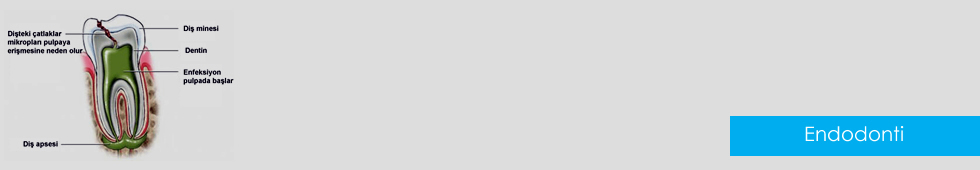

Endodonti (Kanal Tedavisi)

Kanal Tedavisi Nedir?
Bir dişin canlılığını ve beslenmesini sağlayan damar ve sinirlerinin bulunduğu pulpa boşluğu (dişin öz odası)
çeşitli sebeplerle enfekte olabilir. Böyle bir durumda diş pulpasının ve bütün enfekte diş
dokularının uzaklaştırılarak dişin kök kanalarının dezenfeksiyon ve sterilizasyonu sağlandıktan sonra yapılan
kök ve kron dolgu işlemine kanal tedavisi denilmektedir.
Apex Locater (kök ucu bulucu)Teknolojisi: Kanal tedavisinde başarının en önemli kriteri tam kök ucuna kadar
ulaşıp kökten dışarı taşmadan tıkaç şeklinde bir kök kanal dolgusu yapabilmektir. Önceden klasik tedavi
yönteminde kök ucunu tam yakalayabilmek için hastadan defalarca film çekilir, hem fazladan radyasyona maruz
bırakılırdı hem de işlem süresi uzatılırdı. Apex locater cihazı, elektronik bir sistem aracılığıyla kullanılan
aletler kök ucuna geldiğinde sinyal vermektedir. Bu sayede gereksiz yere radyograf almaya gerek kalmamıştır.
Rotary Sistemler (Döner Alet Sistemleri): Kök kanalları anatomik olarak neredeyse bir saç teli inceliğindedir.
Bu kanalların yeri doğru tespit edilip yaklaşık 10-15 kat genişletilmesi gerekmektedir. Bunun için de klasik
olarak kullanılan kanal eğeleri ile manuel yöntemle eğeleme hareketi yapılır. Bu yöntem tedavi süresini oldukça
uzatan ve hastanın çene eklemini yoran bir işlemdir. Döner alet sistemleri sayesinde bu eğeleme işlemini elle
yapmak yerine elektronik olarak bir takım hassas cihazlarla yapmak mümkündür. Bu sayede oldukça yüksek bir hasta
konforu sağlanmış olacaktır.